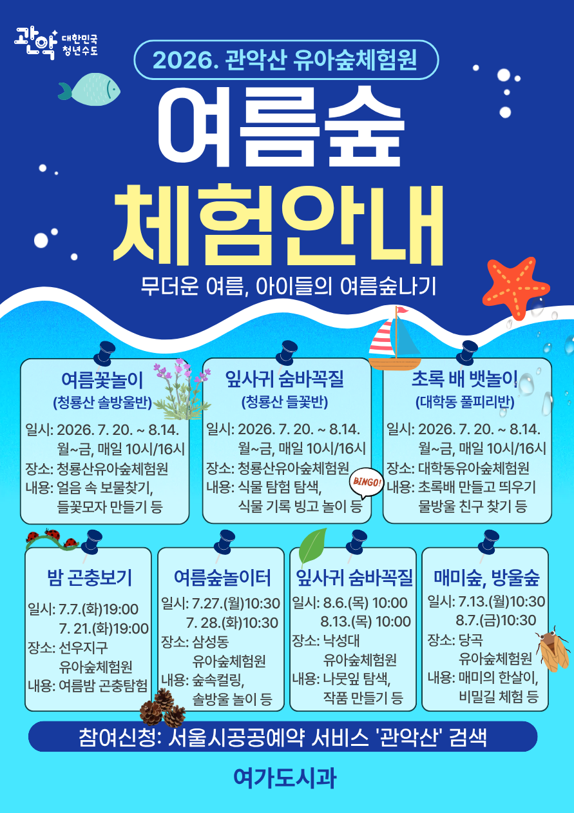

청룡산 숲바울반
7.20.~8.14. 월~금 10시 / 16시여름꽃놀이
얼음 속 보물찾기, 들꽃모자 만들기 등

관악구가 여름방학을 맞아 아이들이 자연 속에서 마음껏 뛰놀고, 보고 듣고 만지며 배우는 유아숲체험원 여름방학 특별프로그램을 운영합니다.
장소별 일정과 내용은 예약 홈페이지에서 최종 확인해주세요.
얼음 속 보물찾기, 들꽃모자 만들기 등
식물 탐험 탐색, 식물 기록 빙고 놀이 등
초록배 만들고 띄우기, 물방울 친구 찾기 등
여름밤 곤충탐험
숲속 컬링, 솔방울 놀이 등
나뭇잎 탐색, 작품 만들기, 매미의 한살이 등
집 가까운 숲에서 아이와 함께 여름 자연체험을 즐겨보세요.
프로그램 내용 및 장소는 현장 상황에 따라 변동될 수 있습니다. 세부 일정, 모집 인원, 준비물은 서울시 공공서비스예약 홈페이지의 프로그램별 안내를 기준으로 확인해주세요.